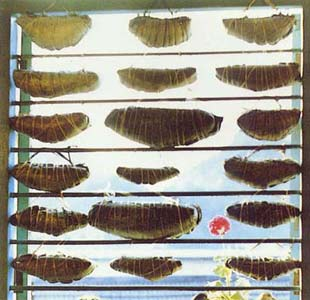
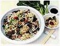
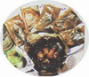

壮家驼背粽，按制作方法又分包米粽和包糕粽。包米粽是将糯米适当掺些粳米后浸泡一宵，如果是黑肉粽则需以稻草灰过滤的黑灰水浸泡。事先将粽叶洗净待用，这是一种专用于包粽的草本阔叶，壮话叫Rongdaij，长50厘米左右，宽约18厘米，柔软而有韧性，煮熟后在粽子上留下淡绿的颜色，并有诱人的清香。将泡好的米放在粽叶上，铺平，中间放上以作料泡好的生肉条，裹以绿豆沙，再盖上米，包成侧面呈钝角等腰三角形的驼背粽，以稻穗秆绑好，煮熟即成。最大的状元粽要包一斗米以上。包糕粽做法相同，但米需磨浆过滤，稍干即可包扎。由于粽叶具有保鲜、解毒的功效，所以，经煮熟透的粽子往往可以保存个把月，挂在家里，既可随爱而吃，又可体现家庭喜庆和富足。一个粽子可供一到几桌人吃用，表示团圆和美，又易于存放，为亲朋间馈赠礼品。
广西特色小吃
老友面

这是有着百年历史的面食。据说，一老翁每天都光顾周记茶馆喝茶，有一天因感冒没有去茶馆，周记老板便以精制面条，佐以爆香的蒜末、豆豉、辣椒、酸笋、牛肉末、胡椒粉等，煮成热面条一碗，送予这位老友吃。老翁吃后出了一身汗，病状减轻，故由此而得"老友面"之名。老友面食之开胃驱寒，深受食客欢迎而经久不衰。
桂林米粉

是最负盛名的桂林小吃食品，因佐料和烹调方法不同，品种可分为卤味米粉、生菜米粉、马肉米粉、原汤米粉、牛腩米粉等。米粉粉条洁白、细嫩、软滑而柔韧，配料芳香，肉菜软脆、卤水鲜美。尤以卤菜米粉、马肉米粉风味独特，食后难忘。外地到桂林的人，以吃桂林米粉为口福，末品尝到桂林米粉为遗憾。
特别链接：没落中的广西米粉
梧州纸包鸡

将鸡肉软件腌制后，包在玉扣纸内密封，放入六成热的油锅里，两面炸熟即成。特点是鸡肉原汁原味，肉嫩鲜美，甘香可口，滑而不腻。为梧州传统名菜。相传已有近百年历史，它因气味芳香、鲜嫩甘美、制作工艺独特而蜚声海内外。1985年，梧州纸包鸡被选拍入《中国一绝》风情电视纪录片。
五色糯米饭
是壮人三月三歌节必备佳肴。相传古时有五个仙女来到壮乡，壮人用五种竹子搭成五色干栏让她们居住，又给她们披上五彩的壮锦，但米饭仅有白色，于是壮族姑娘们用红兰草、黄饭花、枫叶、紫蕃藤叶汁分别将糯米泡出红、黄、蓝、紫四种颜色，与白色米放在一起蒸出五色饭。仙女们吃到这香溢盈室的五色饭，赞叹不已，遂流传至今。也有的说是为了纪念一条孝顺饲养它的一位孤寡老人的五花蛇特屈(daeggud)，这可能与敬蛇图腾有关。这种饭颜色鲜艳，质地柔软，有种特殊香味，不仅美味可口，还有健身药用功能，为壮族群众招待宾客、走亲送礼或供神祭祖不可缺少的佳品。
打油茶
油茶不说煮而称“打”，是各地的统一称法，而各地的油茶却各有其不同的风味。打油茶是将蒸熟晒干的糯米用油爆成花，再将一把粳米入锅炒，同时放入茶叶，然后加入适当水，煮滚后滤出茶叶，加食盐调味，再用它来冲泡炒米花、炒黄豆或者是炸油果等，或者制成甜味，视各人口味而定。
卷筒粉
用磨成的民浆放进托盘摊成一张薄饼，撒一些肉末、葱花在上面，蒸熟后卷成卷即可上碟，佐以酱料、香油等拌以食用。特点是软滑爽口。
酸 品
南宁方言叫“酸野”。南宁有句俗话称“行人难过酸野摊”，即将“酸野”描述得维妙维俏。制作是采用当地物产木瓜、萝卜、黄瓜、莲藕、椰菜、菠萝等时令果蔬，配以酸醋、辣椒、白糖等腌制而成。吃起来酸、甜、香、辣味味俱到，脆爽可口，生津开胃。
桂菜显山露水 冲刺著名菜系
广西是一个以壮族为主、多民族聚居的自治区，各少数民族既有自己独特的文化发展历史，又与汉族有千丝万缕的联系，这就形成了独具广西地域性的饮食文化。桂菜，其菜品高、中、低档达数千种，粗细面点数百种，风味小吃也有几百种，经过专家评委认定广西名菜点达１５００余种，基本形成了一个完整的桂菜体系。其特点可概括为北辣、南甜、西微辣，东嫩鲜。但是，长久以来，桂菜却徘徊在中国著名菜系之外。
广西菜博采众长拥有五种风味
广西位于祖国西南部，北接湖南，东连广东，西与云、贵、川近邻，在通商往来中，历来有背靠大西南、面向东南亚之说，是西部大开发的重要省区之一。因此在饮食口味上受川味、湘味、粤味的影响很深，再加历史上全国经济重心自北南移，大量中原人进入广西带来了先进的烹饪技术、文化。抗日战争期间，全国烹饪高手来广西收徒传艺，使广西饮食文化博采各地之长，促进了广西餐饮业的发展。这样就使广西菜逐步形成了５种风味——
桂北风味菜，以桂林、柳州的地方菜组成，口味醇厚，色泽浓重，善炖扣，嗜辛辣，尤长于山珍野味入菜（当然，如今入菜的都是非国家保护动物）。名菜有“野味炖全鸡”、“清蒸桂江鱼”、“荔芋扣肉”等等。桂东南风味菜，包括南宁、梧州、玉林一带的地方菜，讲究鲜嫩爽滑，用料多样化，能选择当地良种禽畜，蔬果风味菜色，名菜有“梧州纸包鸡”、“南宁醉子鸭”、玉林“串烧金钱鸡”、“蚝油柚皮鸡”、“桂绿爽果肉”等等。桂西风味菜，包括百色、河池一带的地方菜，带有浓厚的民族风味，善长众菜合调，粗菜细做，品种多样。近些年来餐饮业兴旺，菜式增多，口味变化较大，主要以微辣、清香、脆嫩为主，主要名菜有“桂西脆皮狗”、“碧绿大鱼头”、“柚皮渡笋扣”、“黑仙醉扣”、“保健羊四糕”等等。海滨风味菜，以北海、钦州、防城地方菜组成，讲究调味，注重配色，擅长海产品制作，河鲜、家禽的菜式也有独到之处。名菜有“春梅红烧海参”、“葵花扣鲜鱿”、“花衣蜇皮”、“芍药虾扇”等等。
少数民族风味菜，由各少数民族菜组成，擅长用源头原料制作菜肴，尤其对江河中的野生鱼种，高山蔬菜，山间珍菌，田埂野菜，乡村土鸡、土鸭情有独钟，又特别强调季节期、成熟期，突出味鲜、味纯的特点。对天然放养和加工饲养的原料，喜欢“重土轻洋”和“原汁原味”，很讲究实惠，制法独特，富有山野乡土气息。壮族擅长以狗肉及各种动物副产品制菜，品种多，技法精，使用率高，甚具特色。侗族的竹笋肉，苗族的竹板鱼，毛南族的烤香猪，京族的海鲜制品都很有民族风味。
这些不同区位、不同民族的特点，具有鲜明的地区性、民族性、文化性，也是这些原因构成了广西菜“域乡有别，风味不同，清甜、微辣、鲜香、脆嫩”的地方饮食文化特色。
旅游文化与名菜发展两相宜
广西菜系经历了火烹时期、陶烹时期、铜烹时期、铁烹时期，都是由简到繁，由粗到细，由分散到集中，由零碎到系统，从量的扩大到质的提高演化过程。所有这些都是随着旅游文化的发展而发展的。特别是改革开放以来，广西名菜、名点多以旅游资源为题材，以民间故事传说与烹饪技巧相结合的形式，继承和发扬了地方饮食文化特色，推动了广西菜系日趋走向成熟。有的名菜是贡品，如“荔浦芋头”制品，有的名菜具有革命传统，如邓小平同志最喜欢吃的“脆皮狗肉”，还有的带有民间故事的传说，如“三姐柳江鱼”，说是刘三姐逃难在柳江时，因没饭吃，只好靠柳江鱼为生，刘三姐虽肚中空，但所钓上的小鱼都一律放生，鱼精发现刘三姐是一位善人，便把最大的鱼送上刘三姐的钓钩，刘三姐感到事情有些奇怪，不舍得吃，便把钓上的大鱼也随之放生，这更感动了鱼精，便摇身变成打鱼老翁，划船到刘三姐附近，把钓上的鱼送给刘三姐，这样“三姐柳江鱼”的故事就传开了。“桂林马肉米粉”相传是秦始皇由宰相李斯陪同在桂林游览，来到一家农舍，好客的主人见是远道而来的客人，立即将一匹马杀了，割肉煮了一碗米粉，香气四溢，肉烂汤鲜，始皇帝吃了如同神仙一般，直夸马肉米粉好吃，此粉因此而得名，流传至今。
广西菜极有可能成为中国第九大菜系
专家认为，通过全区性的评定广西名菜，对桂菜形成体系是个很大的推动，特别是评选严格按照 “绿色、保健、长寿”的要求，注重广西的地域性、民族性、文化性，评出的１５００余种名菜点有一定的代表性，属广西的优秀菜品。
但是就其推广来说还要解决很多问题，一是因评委们把握的程度不一，评上的名菜还应再次筛选；二是厨师制作菜的稳定程度不一，评上名菜还需提高；三是顾客的要求程度不一，还需要广泛征求意见。对此，自治区烹饪协会提出近期以南宁各家宾馆、饭店为展销点，对评上广西名菜的菜肴进行展销，拟在邕江宾馆太阳城、银河大酒店、明园饭店紫云轩、凤凰宾馆、桃源酒家等５个点进行，组织各家就近送展，目的是为解决名菜评定工作中的问题，真正推出广西名菜，促进广西菜系的形成，也为国际民歌节期间的广西名菜大展销做准备。
据有关人士透露，借此机遇，广西菜系极有可能成为中国第九大菜系。